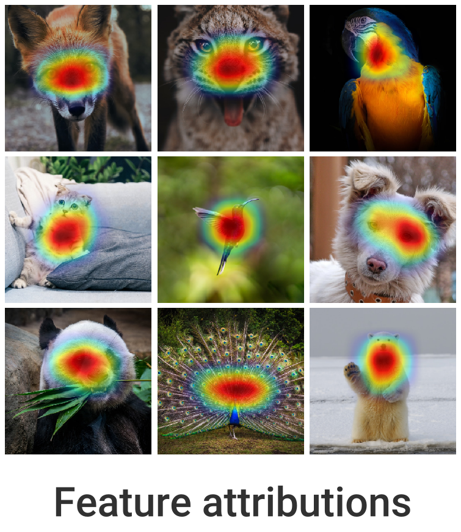
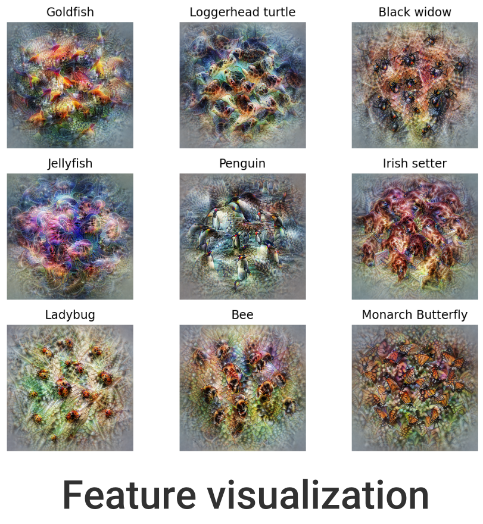

Home

🦊 Xplique (pronounced \ɛks.plik\) is a Python toolkit dedicated to explainability, currently based on Tensorflow.
The goal of this library is to gather the state of the art of Explainable AI to help you understand your complex neural network models.
Attributions
·
Concept
·
Feature Visualization
·
Metrics
The library is composed of several modules, the Attributions Methods module implements various methods (e.g Saliency, Grad-CAM, Integrated-Gradients...), with explanations, examples and links to official papers. The Feature Visualization module allows to see how neural networks build their understanding of images by finding inputs that maximize neurons, channels, layers or compositions of these elements. The Concepts module allows you to extract human concepts from a model and to test their usefulness with respect to a class. Finally, the Metrics module covers the current metrics used in explainability. Used in conjunction with the Attribution Methods module, it allows you to test the different methods or evaluate the explanations of a model.



📚 Table of contents¶
- 📚 Table of contents
- 🚀 Quick Start
- 🔥 Tutorials
- 📦 What's Included
- 👍 Contributing
- 👀 See Also
- 🙏 Acknowledgments
- 👨🎓 Creator
- 📝 License
🚀 Quick Start¶
Xplique requires a version of python higher than 3.6 and several libraries including Tensorflow and Numpy. Installation can be done using Pypi:
pip install xplique
Now that Xplique is installed, here are 4 basic examples of what you can do with the available modules.
Attributions Methods¶
let's start with a simple example, by computing Grad-CAM for several images (or a complete dataset) on a trained model.
from xplique.attributions import GradCAM
# load images, labels and model
# ...
explainer = GradCAM(model)
explanations = explainer.explain(images, labels)
# or just `explainer(images, labels)`
Attributions Metrics¶
In order to measure if the explanations provided by our method are faithful (it reflects well the functioning of the model) we can use a fidelity metric such as Deletion
from xplique.attributions import GradCAM
from xplique.metrics import Deletion
# load images, labels and model
# ...
explainer = GradCAM(model)
metric = Deletion(model, inputs, labels)
score_grad_cam = metric(explainer)
Concepts Extraction¶
Concerning the concept-based methods, we can for example extract a concept vector from a layer of a model. In order to do this, we use two datasets, one containing inputs containing the concept: positive_samples, the other containing other entries which do not contain the concept: negative_samples.
from xplique.concepts import Cav
# load a model, samples that contain a concept
# (positive) and samples who don't (negative)
# ...
extractor = Cav(model, 'mixed3')
concept_vector = extractor(positive_samples,
negative_samples)
Feature Visualization¶
Finally, in order to find an image that maximizes a neuron and at the same time a layer, we build two objectives that we combine together. We then call the optimizer which returns our images
from xplique.features_visualizations import Objective
from xplique.features_visualizations import optimize
# load a model...
neuron_obj = Objective.neuron(model, "logits", 200)
channel_obj = Objective.layer(model, "mixed3", 10)
obj = neuron_obj + 2.0 * channel_obj
images = optimize(obj)
🔥 Tutorials¶
We propose some Hands-on tutorials to get familiar with the library and its api:
- Getting Started

- Tabular Data and Regression
- Introduction to Metrics
You can find a certain number of other practical tutorials just here. This section is actively developed and more contents will be included. We will try to cover all the possible usage of the library, feel free to contact us if you have any suggestions or recommandations towards tutorials you would like to see.
📦 What's Included¶
All the attributions method presented below handle both Classification and Regression tasks.
| Attribution Method | Type of Model | Source | Tabular Data | Images | Time-Series |
|---|---|---|---|---|---|
| Deconvolution | TF | Paper | ✔ | ✔ | TBD |
| Grad-CAM | TF | Paper | ✔ | TBD | |
| Grad-CAM++ | TF | Paper | ✔ | TBD | |
| Gradient Input | TF | Paper | ✔ | ✔ | TBD |
| Guided Backprop | TF | Paper | ✔ | ✔ | TBD |
| Integrated Gradients | TF | Paper | ✔ | ✔ | TBD |
| Kernel SHAP | Callable | Paper | ✔ | ✔ | TBD |
| Lime | Callable | Paper | ✔ | ✔ | TBD |
| Occlusion | Callable | Paper | ✔ | ✔ | TBD |
| Rise | Callable | Paper | TBD | ✔ | TBD |
| Saliency | TF | Paper | ✔ | ✔ | TBD |
| SmoothGrad | TF | Paper | ✔ | ✔ | TBD |
| SquareGrad | TF | Paper | ✔ | ✔ | TBD |
| VarGrad | TF | Paper | ✔ | ✔ | TBD |
| Attribution Metrics | Type of Model | Property | Source |
|---|---|---|---|
| MuFidelity | TF | Fidelity | Paper |
| Deletion | TF | Fidelity | Paper |
| Insertion | TF | Fidelity | Paper |
| Average Stability | TF | Stability | Paper |
| (WIP) MeGe | |||
| (WIP) ReCo |
| Concepts method | Type of Model | Source |
|---|---|---|
| Concept Activation Vector (CAV) | TF | Paper |
| Testing CAV | TF | Paper |
| (WIP) Robust TCAV |
| Feature Visualization (Paper) | Type of Model | Details |
|---|---|---|
| Neurons | TF | Optimizes for specific neurons |
| Layer | TF | Optimizes for specific layers |
| Channel | TF | Optimizes for specific channels |
| Direction | TF | Optimizes for specific vector |
| Fourrier Preconditioning | TF | Optimize in Fourier basis (see preconditioning) |
| Objective combination | TF | Allows to combine objectives |
👍 Contributing¶
Feel free to propose your ideas or come and contribute with us on the Xplique toolbox! We have a specific document where we describe in a simple way how to make your first pull request: just here.
👀 See Also¶
This library is one approach of many to explain your model. We don't expect it to be the final solution; we create it to explore one point in the space of possibilities.
Other tools to explain your model include:
- Lucid the wonderful library specialized in feature visualization from OpenAI.
- Captum the Pytorch library for Interpretability research
- Tf-explain that implement multiples attribution methods and propose callbacks API for tensorflow.
- Alibi Explain for model inspection and interpretation
To learn more about Explainable AI in general, see:
- Interpretable Machine Learning an excellent book by Christophe Molnar.
- Interpretability Beyond Feature Attribution by Been Kim.
- A Roadmap for the Rigorous Science of Interpretability by Finale Doshi-Velez.
- DEEL White paper a summary of the DEEL team on the challenges of certifiable AI and the role of explainability for this purpose
🙏 Acknowledgments¶
 This project received funding from the French ”Investing for the Future – PIA3” program within the Artificial and Natural Intelligence Toulouse Institute (ANITI). The authors gratefully acknowledge the support of the DEEL project.
This project received funding from the French ”Investing for the Future – PIA3” program within the Artificial and Natural Intelligence Toulouse Institute (ANITI). The authors gratefully acknowledge the support of the DEEL project.
👨🎓 Creator¶
This library was started as a side-project by Thomas FEL who is doing a thesis on explainability.
📝 License¶
The package is released under MIT license.